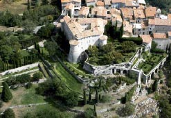

Le patrimoine contemporain - Les déplacements - Le chemin de fer & le tramway
Monument historique
Inscrit le 07.12.1972
Jardins du Château - Gourdon
Soutenu par quatre arcades colossales, le jardin étagé constitue un belvédère unique sur le littoral d’Antibes et les Préalpes. La visite du jardin est spécifiquement sur rendez-vous d’avril à octobre. C’est un jardin composite organisé autour de trois principaux éléments :
